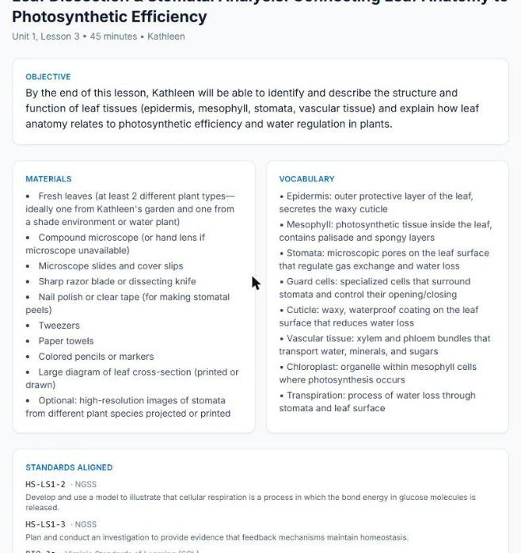
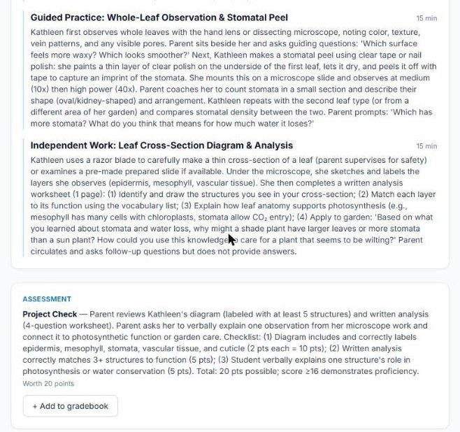
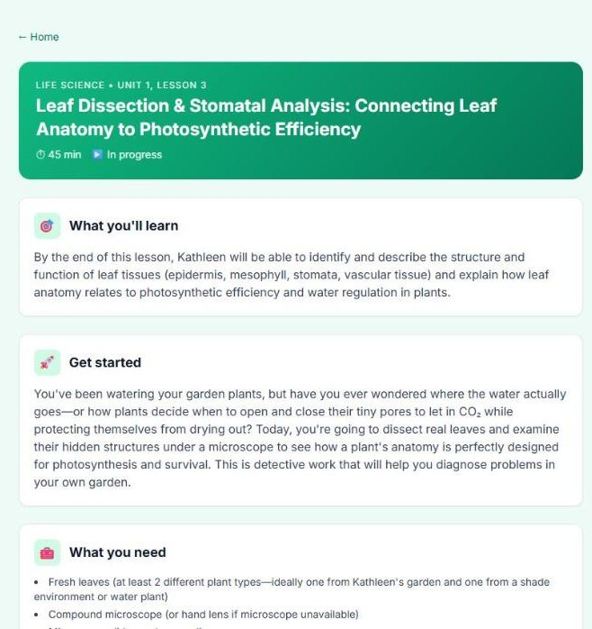
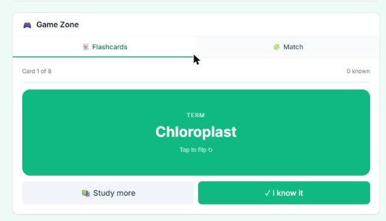
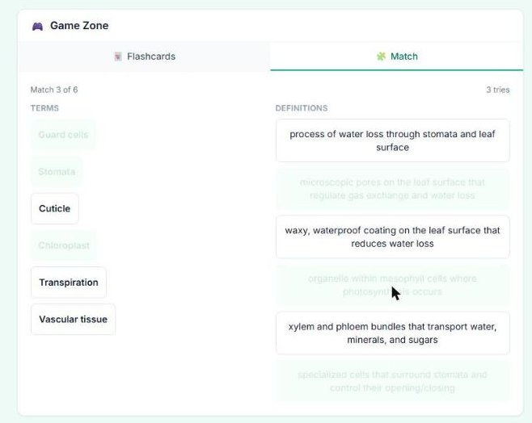
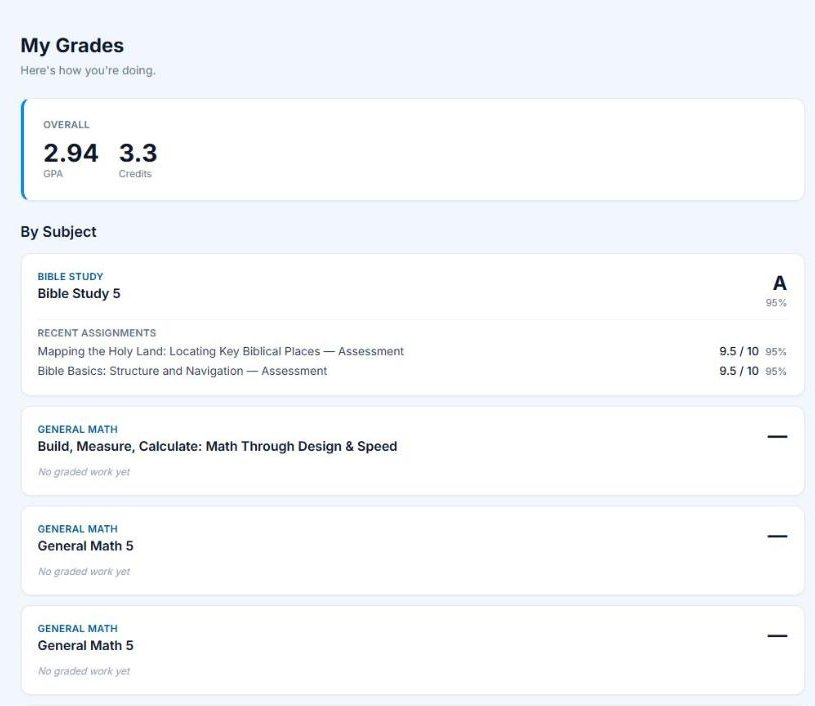
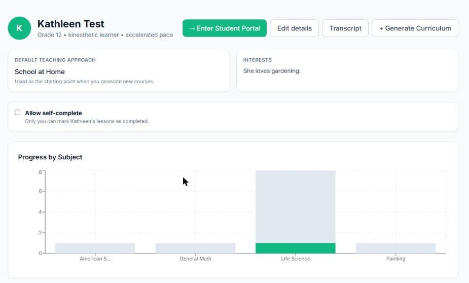

Work / Pathways
Pathways
An AI-powered homeschool platform that turns a parent's goals into a full K-12 curriculum.
A friend wanted to homeschool his kids but did not know how to build a curriculum, pick a teaching approach, or keep track of progress. Most tools either hand parents a rigid program or leave them to figure it out alone.
I designed and built Pathways, a web app on the Claude API that generates full lessons from the parent's goals and the student's profile: objective, materials, vocabulary, aligned standards (Common Core, NGSS, and the family's state), a three-part activity sequence, a scored assessment, modifications for struggling and advanced learners, and homework. It supports six pedagogical models and blends them using a compatibility matrix I designed.
The student side is where the practice happens. Every lesson generates its own Game Zone from the lesson's vocabulary: flashcards the student marks as known, and a match game that counts tries. Practice always matches what was just taught. Students see their own progress and grades; parents see gradebooks, transcripts, and progress by subject.
- Type
- Learning product design and development
- Client
- Personal project, in use by families
- Date
- 2025 to present
- Tools
- Claude API
- React 18
- Vite
- Tailwind CSS
- Supabase
- Netlify Functions
- xAPI
- Skills
- Learning product design
- Curriculum generation
- Prompt design
- Pedagogical model design
- Practice and feedback design
- Full-stack development
The design process
Initial design
I started with the parent's job to be done: decide what to teach, how, and whether it is working. Each of those became a part of the app. The six pedagogical models came first, on paper, with a matrix of which ones combine well.
Storyboarding
I storyboarded the parent flow and the student flow separately, since they need different voices and different controls. The prompts were drafted as part of the storyboard, with the content each screen needed to show.
Development
Built in React with Supabase for data and Netlify serverless functions calling the Claude API. I shipped it in increments: curriculum generation first, then the student portal and games, then worksheets, gradebooks, and transcripts.
The finished project

The generator reads the student's profile: learning style, pace, interests, accommodations, and the state standards to layer on top of Common Core. 
A generated Grade 12 life science lab, parent view: objective, materials, and vocabulary. 
Every lesson has a three-part activity sequence and a scored assessment that can be added to the gradebook. 
The same lesson in the student's voice. 
Game Zone: flashcards generated from the lesson's vocabulary. 
The match game counts tries, so a student can see the difference between knowing and guessing. 
Students see their own grades, GPA, and credits. 
Parents see progress by subject for each student.